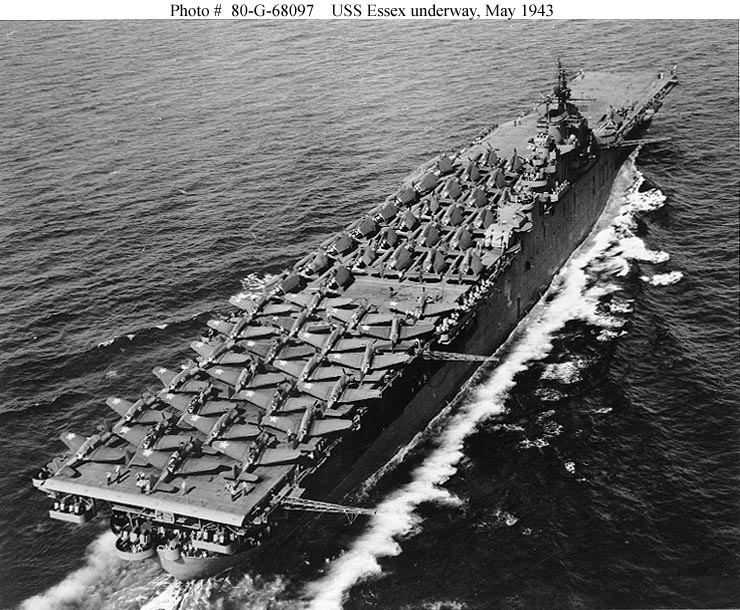
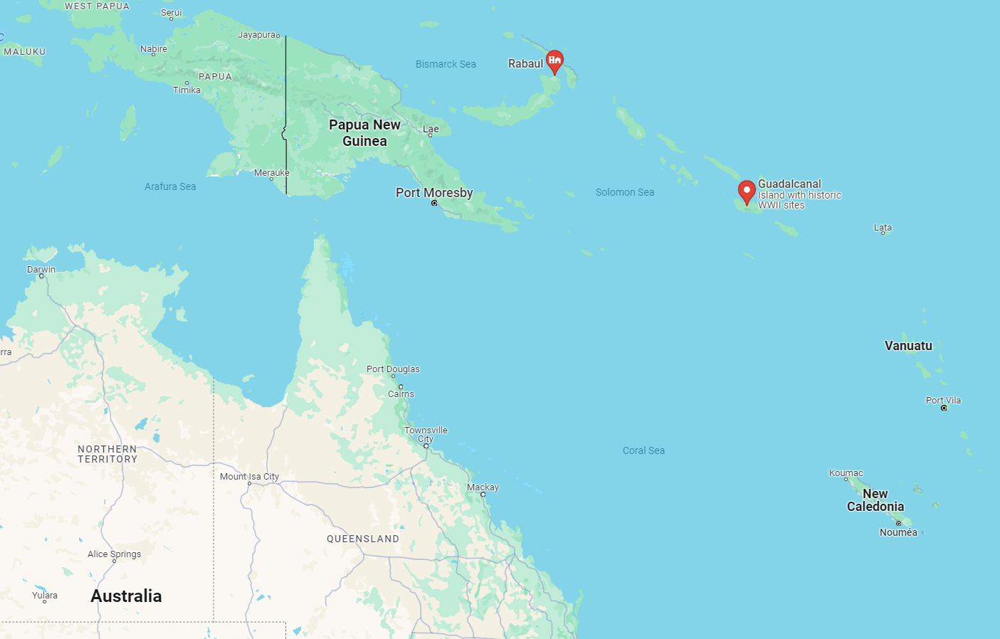
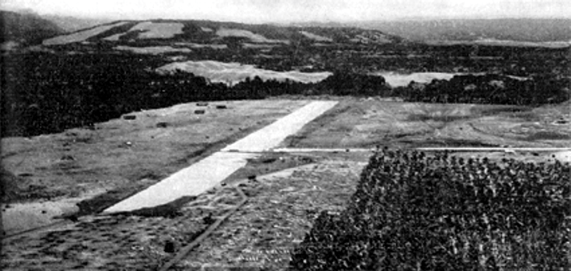
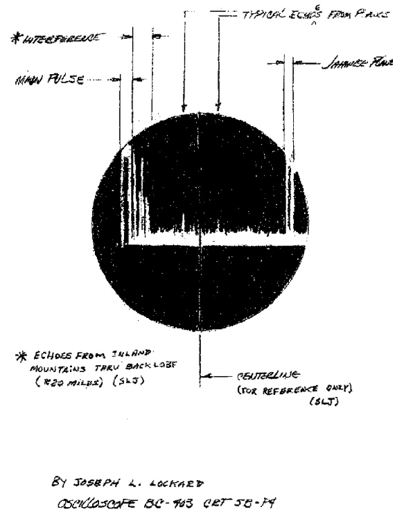
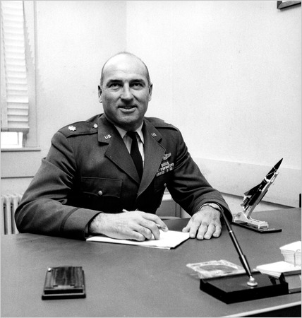
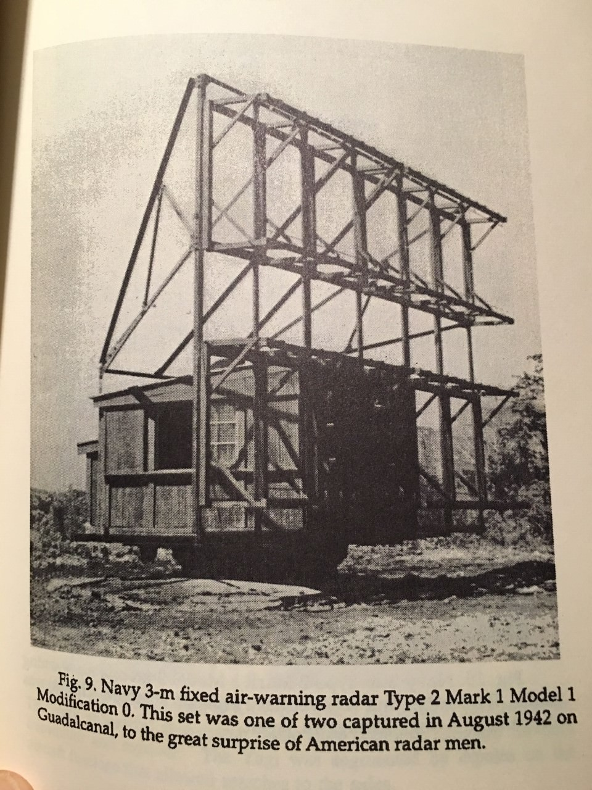

과달카날에서의 레이더 이야기 (1) - 일본군의 비밀 병기
게시: 2024-02-08T06:30:50+09:00
<항공모함이 더 좋을까 지상 항공기지가 더 좋을까> 항공모함의 약점은 공격 당하면 침몰한다는 것이지만 장점은 30노트의 속력으로 먼 바다를 움직이므로 어디에 있는지 파악하기가 어려워 공격하기도 어렵다는 것. 지상에 건설해놓은 항공기지의 장점과 약점은 정확하게 그 반대. 불침항모라고 할 수도 있지만 항상 적의 폭격과 포격에 두들겨 맞을 각오를 하고 있어야 함. 하지만 가장 중요한 점은 항공모함은 보급 문제로 며칠 혹은 몇 주만 그 해역에 머물 수 있지만 항공기지는 그냥 영원히 그 자리에 버티고 있을 수 있다는 점. 게다가 선박의 배수량은 무한정 커질 수 없으므로 항모의 규모와 그 역량에는 제한이 있지만, 항공기지의 규모와 방어 시설은 거기에 얼마나 투자를 하느냐에 따라 무한정에 가깝게 커질 수 있음. 따라서 결국은 항공기지가 더 중요한 것처럼 보임.

(에섹스급 정규항모의 nameship인 USS Essex (CV-9). 1943년 미드웨이로 배달할 항공기들을 잔뜩 싣고 속력을 내고 있는 모습. 흔히 에섹스급 항모는 전쟁 발발 이후 찍어내기 시작했다고 생각하지만 실제로는 1936년 해군 조약이 파기되면서 설계를 시작하여 1940년, 미국이 전쟁에 참전하기 전에 용골을 만들기 시작했음. 다만 원래는 CV-9부터 CV-11까지 3척만 건조할 예정이었으나 진주만 습격 이후 마구 찍어내기 시작하여 총 32척을 발주했고 그 중 24척을 완공. WW2 이후에도 개조를 거쳐 1970년대까지 알차게 사용했으며 한국전, 월남전에 참전한 것은 물론, 우주 탐사 프로그램인 아폴로 계획에 따른 우주선들의 지구 귀환시 우주비행사들이 탄 캡슐을 건져내는 것도 이 항모들이 수행.)
그렇지만 이건 사자와 호랑이가 싸우면 누가 이겨요?라는 질문과 똑같음. 정답은 더 쎈 놈이 이겨요임. 마찬가지로 배수량 3만6천톤짜리 Essex급 정규 항모보다야 200대의 항공기와 지하 연료탱크, 각종 정비창을 완전히 갖춘 항공기지가 더 중요하지만, 항공기지는 움직일 수가 없고 항공기의 전투 반경에는 제한이 있음. 그러니 전투 현장에서 멀리 떨어져 있는 항공기지는 배수량 1만톤짜리 호위항모보다 더 쓸모가 없음. 그런 점들 때문에, 전쟁이 한창일 때 전술적 전략적으로 매우 중요한 위치에 적군이 항공기지를 건설하기 시작했다면 그것이 완성되기 전에 철저히 때려부수는 것이 매우 중요.

(라바울에 있던 일본군 대규모 기지도 눈엣가시였는데, 과달카날에 제2의 라바울이 생기면 진짜 끝장.)

(1942년 7월 일본군이 닦아놓은 과달카날의 활주로.)
그래서 1942년 7월, 일본군이 호주 북동쪽에 위치한 솔로몬 제도의 과달카날 섬에 대형 활주로를 닦고 있다는 것을 알게 되자, 미군은 안절부절하게 됨. 그 위치는 미국과 호주를 연결하는 위치 선상에 있었으므로, 거기에 일본군 항공기지가 자리를 잡고 주저 않게 되면 호주가 위태로와지기 때문. 이에 미군은 그 항공기지가 완성되기 전에 과달카날을 점령하기로 작정. <일본놈들에게도 레이더가 있다!!> 1942년 8월, 과달카날에 상륙한 미해병대는 일본군이 닦고 있던 활주로를 점령했고 이를 미해군 공병대가 완성하여 Henderson Field라고 명명. 헨더슨 기지는 불침항모인 동시에 물 위에 내려 앉은 오리 신세. 당연히 인근 비스마르크 제도에 위치한 일본군의 주요 기지인 라바울과 일본해군 항공모함에서 날아올 각종 폭격기들의 집중 공격 대상. 이렇게 동네북이 될 운명인 헨더슨 기지 방어를 위해서는 대공포도 갖추어야 했지만 기지 자체에서 발진할 전투기와 인근 해역에서 대기 중인 미해군 항모 USS Enterprise와 USS Saratoga의 함재 전투기들이 그 폭격기들을 요격해주어야 했음. 그러자면 이쪽으로 날아올 일본 폭격기들을 미리 포착할 레이더의 존재가 필수. 이 모든 점을 감안하고 수행된 과달카날 상륙 작전에서 미해병대는 항공기지에 방공 레이더를 설치해야 한다고 생각하고 지상 기지용 방공 레이더인 SCR-270을 육군에서 빌려 왔었음. 문제는 그 레이더 세트가 수송선에서 하역되기 전에 라바울에서 날아온 폭격기들의 공습에 겁을 먹은 수송선이 먼 바다로 줄행랑을 쳤다는 것. 장비보다 먼저 상륙했던 해병대 소속 기술자와 운용병 등 레이더팀은 그야말로 손가락을 빨게 되었음.

(WW2 내내 미육군의 이동형 레이더로 사용된 SC-270. 별명은 '진주만 레이더' (Pearl Harbor Radar). 그렇게 불린 이유는 1941년 12월 7일 진주만 공습 때 일본 함재기들을 45분 전에 미리 발견했었기 때문. 물론 영화에 자주 표현되었던 것처럼, 당시 레이더 담당 장교가 '아마 본토에서 날아오기로 되어 있던 B-17 폭격기 6대일 것'이라면서 무시했었음. 파장 길이는 3m, 최대 출력 100kW, 탐지 거리 240km.)

(1942년 12월 7일 아침의 역사적인 일본 함재기들의 내습을 포착한 역사적인 SC-270 레이더 화면 사진. 화살표 2개가 달린 맨 위의 설명이 'typical echoes from planes', 즉 '항공기로부터의 전형적인 반사파'라고 되어 있음.)

(일본군과 다른 미군의 장점은 신상필벌. 저렇게 레이더를 갖추고 일본 함재기들의 습격을 뻔히 보면서도 제멋대로 B-17일거라며 공습 경보를 발령하지 않았던 담당 장교는 사진 속의 Kermit Tyler. 당시 육군항공대 소속 중위였던 타일러에 대해 미육군은 어떤 처벌을 내렸을까? 일본군이었다면 아마 할복을 명했을 것 같은데, 직후에 벌어진 미군 조사위원회는 그 레이더 사이트에 바로 1주일 전에 배치된 타일러 중위가 아무런 레이더 운용 훈련이나 교리 학습을 받지 않은 점을 지적하며 타일러 중위에게는 아무런 잘못이 없다는 결론을 내렸음. 아무런 불이익을 주지도 않았음. 사관학교 출신이 아니었던 타일러는 전쟁 내내 잘 복무하고 전후에 창설된 미공군으로 옮긴 뒤에도 잘 승진했으며, 1961년 중령 계급으로 전역. 이후 부동산 중개인으로 일했으며 96세까지 장수.) 할 일이 없게 된 미해병대 레이더팀은 해군 공병대에게 붙잡혀 삽질에 동원될까 두려워 SCR-270 레이더가 하역되면 그걸 어디에 설치할까 등을 미리 구상한답시고 일본군이 80% 정도 완성해놓았던 항공기지 여기저기를 탐방. 그러다 이들은 뜻밖의 발견을 하게 되는데... 그것은 바로 일본군이 설치하다 버리고 간 일본제 레이더 Type 2 Mark 1 Model 1.

(과달카날의 버려진 일본군 기지에서 발견되어 미군을 충격에 빠뜨렸던 일본해군의 지상기지용 레이더 Type 2 Mark 1 Model 1 Mod 1. 1942년 5월에 개발된 것으로서, 일본으로서는 진짜 실험실에서 곧장 최전선으로 보낸 물건. 무게 8.7톤, 파장 길이는 3m, 최고 출력은 5kW, 탐지거리는 항공기 1대일 경우엔 130km. 다이폴(dipole, 양극자) 안테나를 2줄의 평행선으로 배치한 형식이었는데, 기본적으로 미국-영국에 비해 5년 정도 뒤진 기술이었다고. 미해병대 레이더팀은 자신들의 밥줄인 SCR-270 레이더가 하역될 때까지 이 일본제 레이더를 가동시켜 사용해보려고 무진장 애를 썼으나 결국 실패.) 이 뿐만 아님. 이후 벌어질 과달카날 주변 솔로몬 해전을 위해 쳐들어오던 일본 함대의 함정에도 레이더가 설치되어 있었음. (to be continued...)